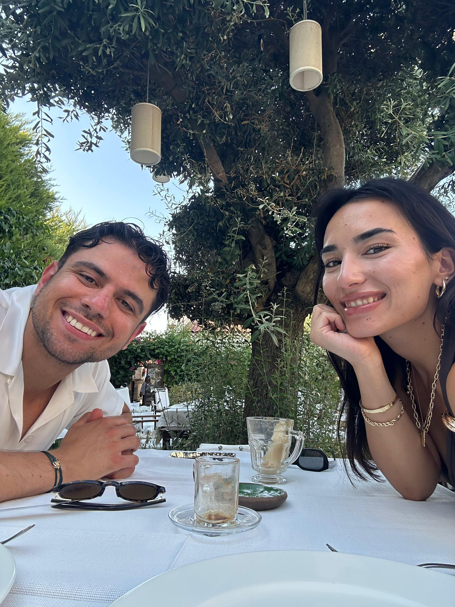

KIZ İSTEME & NİŞAN
Davetiyeyi açmak için dokunun Tippen zum Öffnen
KIZ İSTEME & NİŞAN DAVETİ
27 Haziran 2026 Cumartesi
aşağı kaydırın nach unten scrollen

İki gönül, bir yol
Bahçe Partisi
HARİTA SEÇİN
Sevincimize ortak olun.